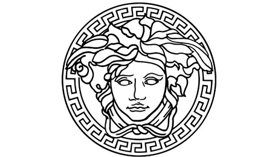

El fundador de la casa italiana Versace, construyó una casa de moda sobre las bases del cuestionamiento del buen gusto, así como otros diseñadores italianos como Franco Moschino, Gianni trajo una nueva definición para el lujo y el clasicismo, usando la hipérbole de la sexualidad como identidad para sus creaciones.

Versace y la moda
Gianni Versace impuso un estilo que cambió la escena de la moda de su época, sus diseños eran provocadores y de siluetas audaces, que resaltaban el estilo de femme fatale de la mujer del momento. Gianni combinaba el lujo y el clasicismo con la sexualidad y la libertad de expresión, cuestionando los estándares del buen gusto a través de sus icónicas creaciones.
Pocos diseñadores pueden presumir de tener una identidad tan marcada y reconocible como la del gran Gianni Versace. Fundada por el modisto italiano en 1978, Versace cambió nuestra forma de entender la moda. El joven Gianni tenía veinte años cuando empezó a diseñar ropa para su hermana Donatella, que por aquel entonces tenía tan solo diez años.
Las creaciones de Versace combinan una singular forma de entender la cultura post-pop con un diseño sexy y atrevido. Gianni era un apasionado del arte, especialmente de los cubistas y del Art Déco, de la experimentación con los materiales y de la historia antigua -de ahí el origen de todo un símbolo de identidad para la marca; la Medusa- y comparaba su taller con un estudio del Renacimiento. Fan declarado de Almodóvar y de Paul Poiret y gran amigo de Jane Fonda, Cindy Crawford, Cher, Elton John o Sting, entre otros, se dice de él que fue el responsable del fenómenos de las supertops a comienzos de los años noventa.
La marca también fue la responsable de iniciar el fenómeno de las alfombras rojas cuando Cindy Crawford acompañó a Richard Gere -por aquel entonces su pareja- a la gala de los Oscar de 1991 con un vestido rojo con escote corazón de la firma. El éxito de su aparición fue tal que se convirtió en el más demandado durante ese año en las fiestas de graduación y aparecieron réplicas en todas las grandes cadenas de moda rápida.